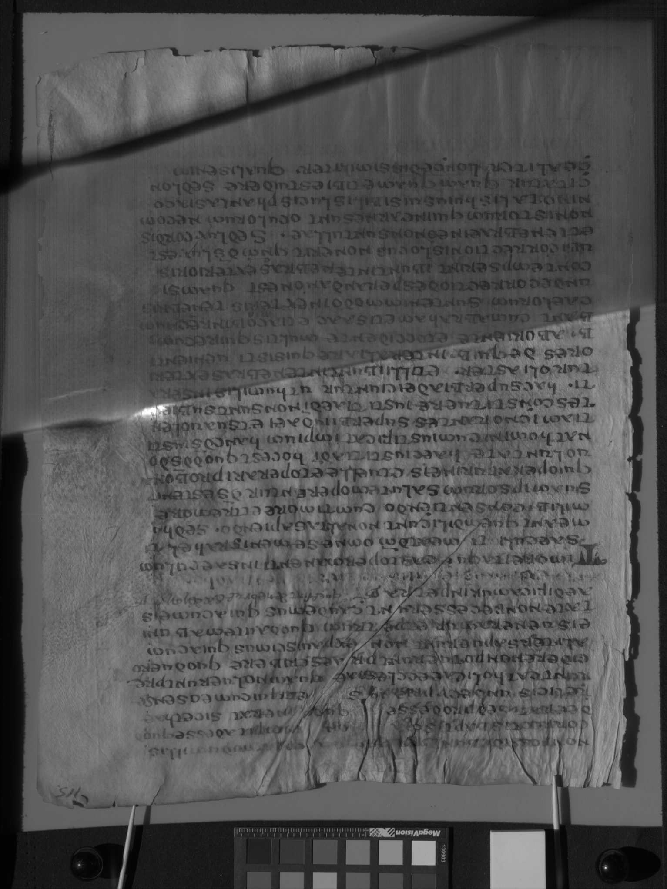
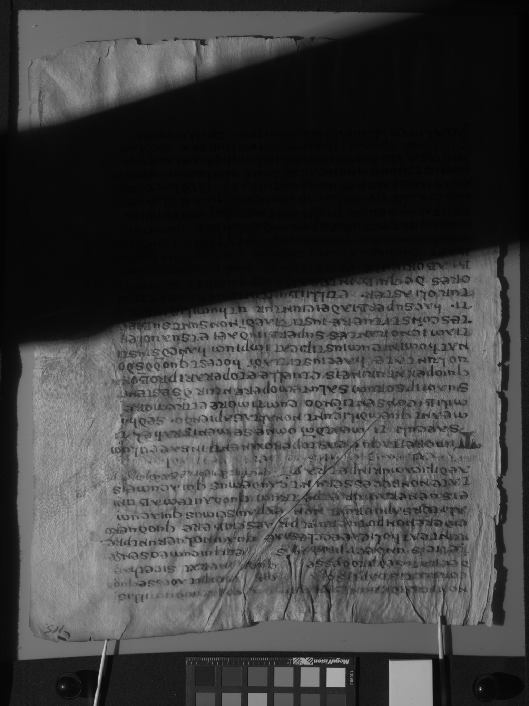

A reflective sphere is used to calculate the light position for each of the hemisphere captures. The spheres can also be useful for recording and calculating the position of the lights for spectral imaging, and for identifying and locating stray light entering the image frame.
Early RTI capture used snooker balls, but black marbles more than suffice around 600 ppi. Black marbles are available online at Amazon.com.
When the hand-held flash method is used it is essential that at least one sphere appear in each frame and reflect the flash (that is, not be shadowed). For the dome and arc methods, it can still be beneficial to place one or two spheres in the frame, but they will typically not be used to calculate light positions. Rather, a calibration sequence is performed with a marble in the center of the frame (and typically additional marbles in the corners and references for focus, spatial resolution, and color). It is important that the center marble has a glare in each of the calibration shots (that is, is never in a shadow). As long as the dome or arc is stable, the light position calculations from the calibration sequence can be used for each object sequence. See "Reuse LP files" under "Tips for frequent use" (LINK).
Standard RTI procedure calls for using two reflective spheres in the frame. This could function as a backup if one is more plagued by shadows than the other. The principal reason for using two spheres is so that--in the future--the angle of the light striking any pixel can be triangulated from two known areas. In the meantime, the best way to minimize aberration due to variation in angle of light hitting different parts of the image frame is for the hemisphere illuminators to be as far from the object as possible (without introducing other problems). It is generally accepted that an illuminator radius of four times the object radius is safe. For this reason, it is also best to place the primary reflective sphere as close to the center as possible. For calibration shots it can be roughly the exact center. For the hand-held flash method, it should be as close to the center without the shadow of the sphere degrading visibility of the object. Furthermore, the sphere should be as coplanar with the image plane as possible.
It is important that the hemisphere captures have the same registration as the spectral captures. That is, the camera and object must remain immobile throughout the spectral and RTI captures.
The lights should all be equidistant from the center of the object being imaged. When using a dome, the equator of the dome should be on the focal plane. When using an arc, the equator of the virtual hemisphere should be on the focal plane. When using a hand-held flash, a string or laser distance finder should be used to position the flash for each capture.
The primary goal of positioning the lights should be an even distribution of light positions around the hemisphere. An additional consideration is to minimize shadows from the camera or copy stand. For example, in the MegaVision arc, which swings over the camera and copy stand on an axis on the focal plane, there are no lights in the dead center of the arc. If there were, those lights would be blocked by the camera and copy stand in four of the seven arc positions. Thus, the center-most lights are slid down the arc such that the copy stand shadow does not pass through the center of the image. If it not fatal, however, if part of the image is shadowed by the copy stand or other side of a codex.
The exposure settings should remain constant throughout the hemisphere capture sequence. The light positions closer to the camera will be brighter than the low angles, but image detail should not be washed out due to overexposure. Although the low-angle captures should be darker for the RTI processing, it may be desirable to brighten them for static raking output. In order to do so, it is helpful if a color checker chart appears in the frame (or some reference defining the blackest black and the brightest non-glare white). To minimize the difficulty from the color checker being eclipsed by the shadow of the copy stand, it is helpful to place the color checker across from the copy stand.
Attention should be paid to minimizing shadows. For example, if some shadows are inevitable because of a copy stand, and some shadows are inevitable because a codex does not open fully, the shadows should be consolidated such that the shadow from the copy stand and the shadow from the facing binding overlap. Simply rotate the binding such that the facing page is in the direction of (or resting on) the copy stand. The images can be rotated after capture to restore right side up.
 Flattening in this context means correcting for irregularities in the illumination. It is an important part of spectral imaging because it prevents the processing algorithms from being distracted or deceived into mistaking light or dark spots due to uneven illumination for light or dark spots due to different material reflectance properties. The illumination irregularities in spectral imaging are quite subtle, resulting mostly from bright spots in the LED illumination not being completely diffused by the diffuser panels.
However, in the case of hemisphere captures there are two very significant kinds of illumination irregularities. The first is that even with the light at a significant radius (but not astronomical, like the sun) there is a natural effect that the side nearer the light is brighter than the far side. Flattening can compensate for this effect, but the question is should it. The eye naturally compensates for this luminosity gradient, and even expects it. Eliminating the luminosity gradient could diminish the realistic sensation of moving a light around the object. However, this effect gives less accurate information about the reflectance properties of the surface. It would be much more difficult to perform stitching if the measured reflectance properties were heavily influenced by whether the pixel is on one side of the frame or the other.
The second significant kind of illumination irregularities particular to hemisphere captures is shadows from the copy stand. If a shadow comes from part of the object not present in the sequence to calibrate flats the shadow will appear even in the flattened image. However, if the shadow was present in the sequence to calibrate flats that shadow can be removed in the flattened images. The only traces of the shadow are thin lines of brightness or darkness along the edges of the shadow (which are minimal if the light positions are stable and the image plane identical) and sometimes a slight difference in brightness based on how much indirect light is scattered by the object. Thus, flattening gathers more information about the artifact, but it can be eerie in that the eye is accustomed to rejecting information loss due to shadow but not accustomed to ghostly artifacts. The information gathered in the shadow indicates reflectance properties in indirect light, rather than direct light which is the assumption of RTI processing. That data will not help the hemispherical harmonic and should be dismissed as an outlier regardless of whether it is an outlier because it is completely dark or an outlier because it shows only indirect light reflectance properties.
Thus there are advantages and disadvantages to flattening hemisphere captures, but overall flattening is advantageous. It is in the nature of RTI that it is a visualization tool that approximates appearance as mediated by the best fit to a hemispherical harmonic. Eventually, the eye will grow accustomed to ignoring artifacts in RTI images as in other areas of perception.
A spectral imaging capture software such as MegaVision PhotoShoot or PhaseOne CaptureOne has the ability to generate color images using all the visible bands.
Furthermore, these color images are created without the use of distorting filters, such as a Bayer filter.
However, the Accurate Color images created by PhotoShoot use a color space that is not correctly interpreted by ImageJ.
For this reason it is important to convert the color space to sRGB before processing with the SpectralRTI_Toolkit.
For example, the relevant command using ImageMajick is convert infile_PSC.tif -colorspace sRGB outfile_sRGB.tif.
Gamma correction is appropriate when the final consumer of brightness is the human eye, that is for the hemisphere captures but not the narrowband captures. The silicon sensor in the camera captures the amount of light reaching the sensor on a linear scale. However, human perception is non-linear, biased toward distinguishing darker tones. A raw linear image viewed without gamma correction will appear dark and lacking detail in the dark regions. Gamma correction increases the intensity of darker pixels to match human perception. The gamma correction built into PhotoShoot is more nuanced than the simple gamma correction available in ImageJ. However it is done, the ImageJ plugin described on the next page will assume that the hemisphere captures are already fit for human consumption (with gamma correction).